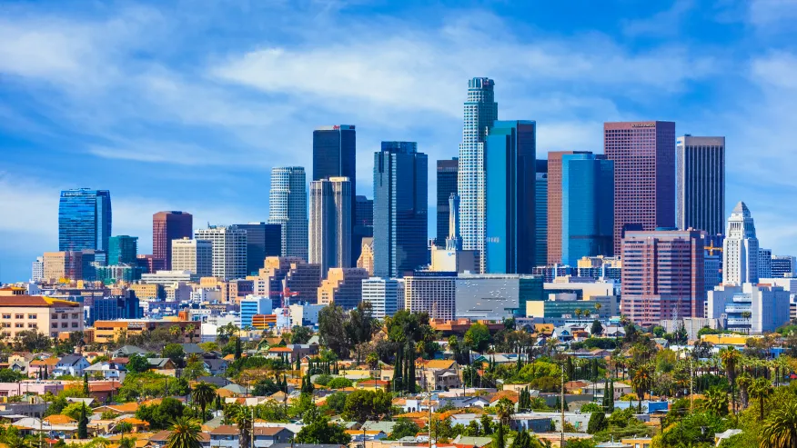
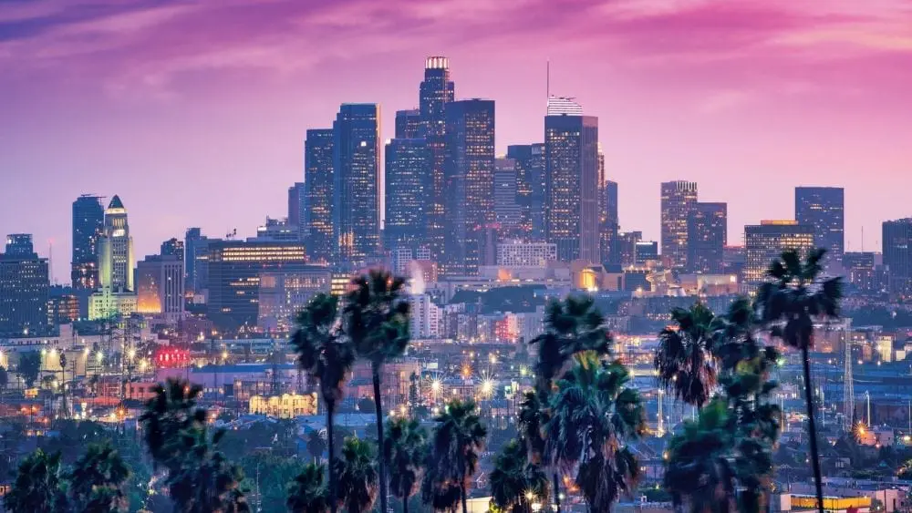

About California


Welcome to the Golden State! Known for its diverse landscapes, rich
cultural heritage, and vibrant economy, California offers something
for everyone.
Population
California is the most populous state in the U.S., with a population
of around 39.24 million people. This diverse population contributes to
the state's rich cultural fabric and dynamic economy.
Year Incorporated
California was incorporated as a state on September 9, 1850.
Region
California is located on the West Coast of the United States, bordered
by Oregon to the north, Neveda to the east, and Arizona to the
southeast. The Pacific Ocean lies to the west.
Classifications
California encompasses a wide range of environments:
-
Urban: Major cities like Los Angeles, San
Francisco, and San Diego are bustling urban centers known for their
cultural, economic, and social significance.
-
Suburban: Areas Surrounding these major
cities, such as Orange County near Los Angeles, provide suburban
living with access to urban amenities.
-
Rural: Extensive rural areas can be found
in Central Valley, Northern California, and eastern deserts,
supporting agriculture, forestry, and recreation.
Average Income level
-
State Median Income: Approximately
$78,672.
-
Urban Areas: Cities like San Francisco
have significantly higher median incomes, reflecting the high cost
of living and the presence of high-paying industries such as
technology and finance.
-
Rural Areas: These areas often have lower
median incomes compared to urban centers, reflecting different
economic structures and industries.
Major Cities Overview
The table below provides an overview of some major cities in
California, highlighting their population, region, and notable facts:
| City |
Population |
Region |
Notable Facts |
| Los Angeles |
3.8 Million |
Southern California |
Known for Hollywood, entertainment industry. |
| San Francisco |
808,437 |
Northern California |
Known for the Golden Gate Bridge, tech industry. |
| Sacramento |
526,669 |
Central Valley |
Capital of California, historic Old Sacramento. |
| San Diego |
1.388 Million |
Southern California |
Known for the beaches, parks, and naval base. |
References
Images
-
California downtown areas were emptied by COVID; some areas are
recovering - by Iman Palm -
Fox News
-
How to Build a House in California - by Michele Lerner -
New Home Source
Texts
-
[1] The 31 California Fun Facts You’ll Wish You Knew Sooner - by
California.com Team -
California Fun Facts